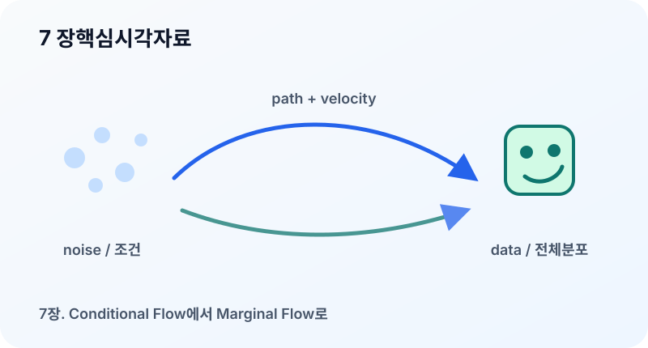

7장. Conditional Flow에서 Marginal Flow로¶
이 장의 질문¶
실제 학습에서는 데이터 샘플과 노이즈 샘플을 하나씩 뽑아 그 사이의 조건부 경로를 만든다. 그런데 우리가 최종적으로 원하는 것은 특정 샘플 쌍 하나의 이동이 아니라 전체 분포 \(p_0\)가 데이터 분포 \(p_1\)로 이동하는 것이다. 조건부로 만든 작은 흐름들을 평균 내면 정말 전체 분포의 흐름이 되는 걸까?
이 장은 Conditional Flow Matching의 핵심 직관을 다룬다. 샘플 쌍마다 쉬운 경로를 만들고, 그 경로들의 평균 효과가 전체 분포의 경로를 만든다는 관점이다. 이 연결을 이해하면 CFM(Conditional Flow Matching) loss가 단순한 편의적 트릭이 아니라 확률적으로 의미 있는 학습 목표라는 점이 보인다.
조건부 경로부터 시작하기¶
먼저 조건 변수 \(z\)를 도입하자. \(z\)는 어떤 경로를 선택했는지를 나타내는 정보다. 가장 쉬운 예에서는 \(z=(x_0,x_1)\)이다. 즉 노이즈 샘플 하나와 데이터 샘플 하나를 뽑아 그 둘을 잇는 경로를 만든다.
조건부 경로는 다음처럼 쓸 수 있다.
이 식은 “조건 \(z\)가 주어졌을 때 시각 \(t\)의 샘플 분포”를 뜻한다. 만약 경로가 결정론적이라면 \(x_t\)는 \(z\)와 \(t\)에 의해 정해진다.
예를 들어 직선 경로에서는 다음과 같다.
이때 조건부 속도는
처럼 단순해진다. 조건 \(z\)가 주어지면 목표 속도를 바로 계산할 수 있다.
Marginal path는 조건부 경로의 평균이다¶
전체 분포 관점에서는 특정 \(z\) 하나가 아니라 가능한 모든 조건을 고려해야 한다. 조건 \(z\)가 분포 \(q(z)\)에서 온다고 하자. 그러면 marginal path는 조건부 경로를 \(z\)에 대해 적분한 것이다.
이 식은 조건부 확률에서 배운 주변화와 같다. \(z\)를 직접 관측하지 않는다면, 가능한 모든 \(z\)의 기여를 더해 전체 분포를 얻는다.
문제는 속도장이다. 조건부 속도 \(u_t(x|z)\)를 알고 있을 때 marginal velocity \(u_t(x)\)는 어떻게 되는가? 핵심은 위치 \(x\)에 도착한 여러 조건부 경로들의 속도를 조건부 평균으로 모은다는 점이다.
즉 같은 위치 \(x\)에 여러 경로가 지나갈 수 있다. 그 경로들이 제안하는 속도를 평균하면 marginal path를 움직이는 속도장이 된다.
왜 MSE로 조건부 속도를 맞춰도 되는가¶
모델은 실제로 \(u_t(x)\)를 직접 보지 않는다. 대신 학습 데이터로 \((x_t,t,u_t(x_t|z))\)를 받는다. 손실은 다음과 같다.
MSE(Mean Squared Error, 평균제곱오차) 회귀에서 중요한 성질이 있다. 입력이 \(x_t,t\)로 고정되어 있을 때 MSE를 최소화하는 예측값은 목표값의 조건부 평균이다.
그런데 오른쪽이 바로 marginal velocity \(u_t(x)\)다. 따라서 조건부 속도를 목표로 학습해도, 충분한 데이터와 모델 용량이 있다면 모델은 marginal velocity를 배우게 된다.
이것이 Conditional Flow Matching의 핵심이다. 계산하기 어려운 전체 속도장을 직접 만들지 않고, 계산하기 쉬운 조건부 속도를 샘플링해서 학습한다.
샘플 쌍을 조건으로 쓰는 경우¶
가장 직관적인 조건은 \(z=(x_0,x_1)\)이다.
이 둘을 독립적으로 뽑으면 각 학습 샘플마다 하나의 경로가 생긴다. 직선 경로에서는
이 방식은 구현이 매우 단순하다. 하지만 모든 노이즈 샘플과 모든 데이터 샘플을 무작위로 연결하면 경로가 비효율적일 수 있다. 서로 멀리 떨어진 점들을 무작위로 연결하면 속도장이 복잡해지고, 생성 시 ODE(Ordinary Differential Equation, 상미분방정식)가 구불구불해질 수 있다.
이 문제 때문에 optimal transport 기반 pairing, rectified flow, 더 나은 path parameterization이 등장한다. 하지만 기본 원리는 변하지 않는다. 조건부로 쉬운 경로를 만들고, 그 경로들의 평균 속도를 모델이 학습한다.
조건부 분포가 넓은 경우¶
조건부 경로가 항상 결정론적일 필요는 없다. 어떤 방법은 조건 \(z\)가 주어져도 \(x_t\)가 가우시안 분포를 따르도록 설계한다.
이 경우에는 \(x_t\)를 샘플링해야 하며, 조건부 속도도 평균과 분산의 시간 변화에 따라 달라질 수 있다. 장점은 diffusion과 비슷한 노이즈 구조를 표현할 수 있다는 점이다. 단점은 수식이 더 복잡해지고 구현에서 broadcasting과 scale 처리를 조심해야 한다는 점이다.
조건부 경로가 결정론적이든 확률적이든 핵심은 같다.
직관적 비유¶
전체 데이터 분포를 한 번에 이동시키는 것은 도시 전체의 교통 흐름을 직접 설계하는 것과 비슷하다. 너무 복잡해서 모든 도로의 평균 이동 방향을 한 번에 계산하기 어렵다.
대신 개별 사람의 출발지와 도착지를 알고 있다고 하자. 각 사람에게는 단순한 이동 경로를 정해 줄 수 있다. 같은 도로 위에서 여러 사람이 다른 방향을 원할 수 있지만, 그들의 평균 이동 방향을 보면 그 도로의 전체 흐름을 추정할 수 있다.
Conditional Flow Matching은 이와 비슷하다. 개별 경로는 단순하게 만들고, 모델은 같은 위치와 시간에서 관측되는 속도들의 평균적인 방향을 배운다.
구현에서 보이는 형태¶
미니배치 학습에서는 다음 순서가 된다.
- 데이터 배치 \(x_1\)을 가져온다.
- 같은 shape의 노이즈 \(x_0\)를 샘플링한다.
- \(t\sim \mathrm{Uniform}(0,1)\)을 샘플링한다.
- \(x_t\)를 만든다.
- 목표 속도 \(u_t\)를 만든다.
- 모델이 \(v_\theta(x_t,t)\)를 예측한다.
- MSE를 계산한다.
직선 경로라면 4번과 5번은 매우 짧은 코드가 된다.
하지만 이 짧은 코드 뒤에는 조건부 경로와 marginal velocity의 연결이 숨어 있다. 이 연결을 모르면 구현은 쉬워 보이지만 왜 작동하는지 이해하기 어렵다.
시각 자료¶

- 조건부 경로 묶음 그림: 여러 개의 \(x_0\)와 \(x_1\) 쌍을 선으로 연결하고, 같은 중간 영역을 지나는 선들의 평균 방향을 굵은 화살표로 표시한다.
- 주변화 그림: \(p_t(x|z_1)\), \(p_t(x|z_2)\), \(p_t(x|z_3)\)가 겹쳐져 전체 \(p_t(x)\)를 만드는 모습을 반투명 곡선으로 보여 준다.
- MSE 조건부 평균 그림: 같은 위치 \(x\)에서 여러 목표 속도 화살표가 있고, 모델 예측은 그 평균 화살표를 향하는 구조로 표현한다.
요약¶
- Conditional Flow Matching은 계산하기 쉬운 조건부 경로 \(p_t(x|z)\)와 조건부 속도 \(u_t(x|z)\)에서 출발한다.
- 전체 marginal path는 조건부 경로를 조건 \(z\)에 대해 주변화해서 얻는다.
- MSE 회귀의 최적 예측값은 조건부 평균이므로, 조건부 속도를 학습하면 marginal velocity를 배울 수 있다.
- 샘플 쌍 \(z=(x_0,x_1)\)을 조건으로 쓰면 구현은 단순하지만 경로 효율성은 pairing 방식에 영향을 받는다.
- CFM의 핵심은 쉬운 조건부 문제들을 많이 샘플링해 어려운 전체 분포 이동 문제를 푸는 것이다.